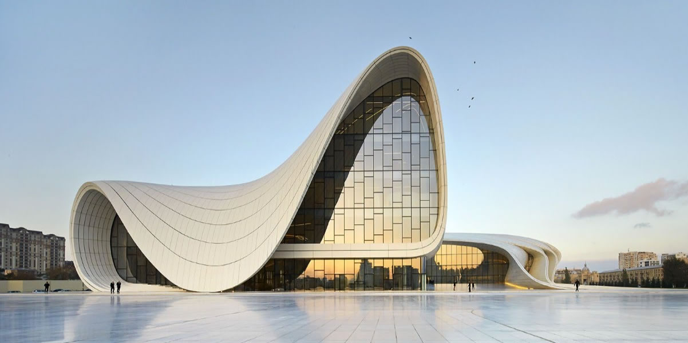

Azerbaijan
Azerbaijan officially the Republic of Azerbaijan (Azerbaijani: Azərbaycan Respublikası), is a country in the South Caucasus region, situated at the crossroads of Southwest Asia and Southeastern Europe. It is bound by the Caspian Sea to the east, Russia to the north, Georgia to the northwest, Armenia to the west and Iran to the south. The exclave of Nakhchivan is bound by Armenia to the north and east, Iran to the south and west, while having an 11 km border with Turkey in the north west.
The Azerbaijan Democratic Republic proclaimed its independence in 1918 and became the first democratic state in the Muslim orient world. The country was incorporated into the Soviet Union in 1920 as the Azerbaijan Soviet Socialist Republic. The modern Republic of Azerbaijan proclaimed its independence on 30 August 1991, prior to the official dissolution of the USSR in December 1991. In September 1991, the Armenian majority of the disputed Nagorno-Karabakh region seceded to form the Nagorno-Karabakh Republic. The region and seven adjacent districts outside it became de facto independent with the end of the Nagorno-Karabakh War in 1994. These regions are internationally recognized as part of Azerbaijan pending a solution to the status of the Nagorno-Karabakh, found through negotiations facilitated by the OSCE.
Azerbaijan is a unitary semi-presidential republic. The country is a member state of the Council of Europe, the OSCE and the NATO Partnership for Peace (PfP) program. It is one of six independent Turkic states, an active member of the Turkic Council and the TÜRKSOY community. Azerbaijan has diplomatic relations with 158 countries and holds membership in 38 international organizations. It is one of the founding members of GUAM, the Commonwealth of Independent States (CIS) and the Organization for the Prohibition of Chemical Weapons. A member of the United Nations since 1992 after its independence, Azerbaijan was elected to membership in the newly established Human Rights Council by the United Nations General Assembly on 9 May 2006. Its term of office began on 19 June 2006. Azerbaijan is also a member state of the Non-Aligned Movement, holds observer status in World Trade Organization and is a correspondent at the International Telecommunication Union.
